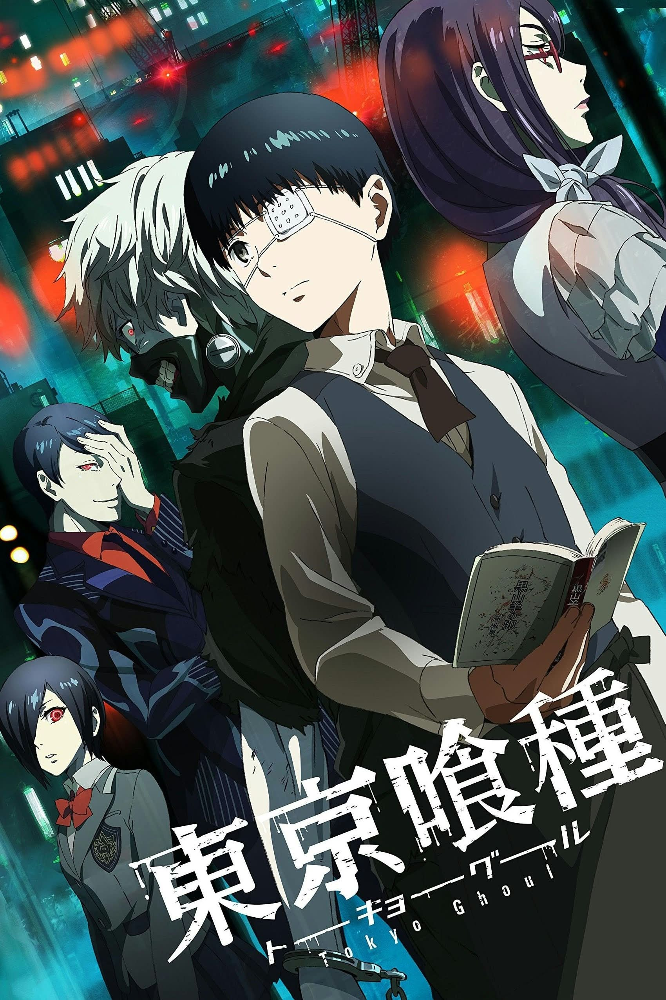
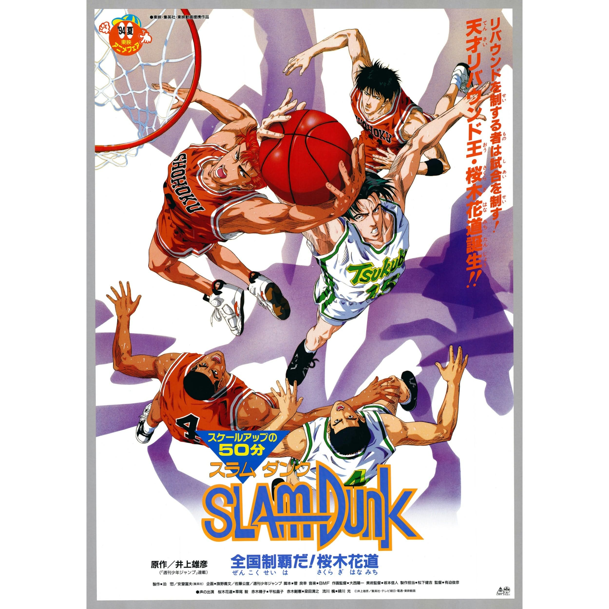
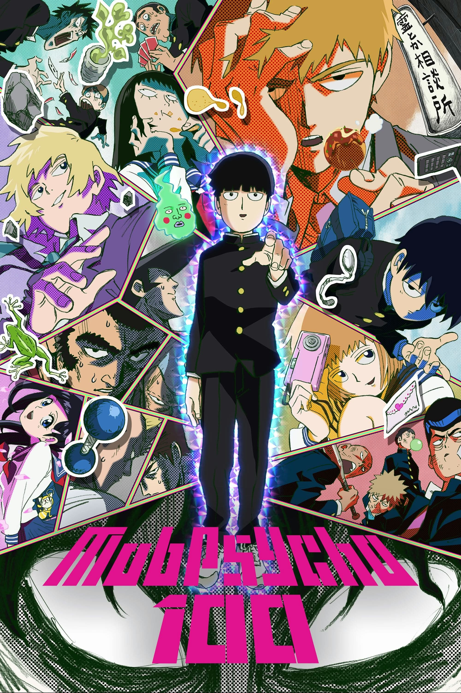
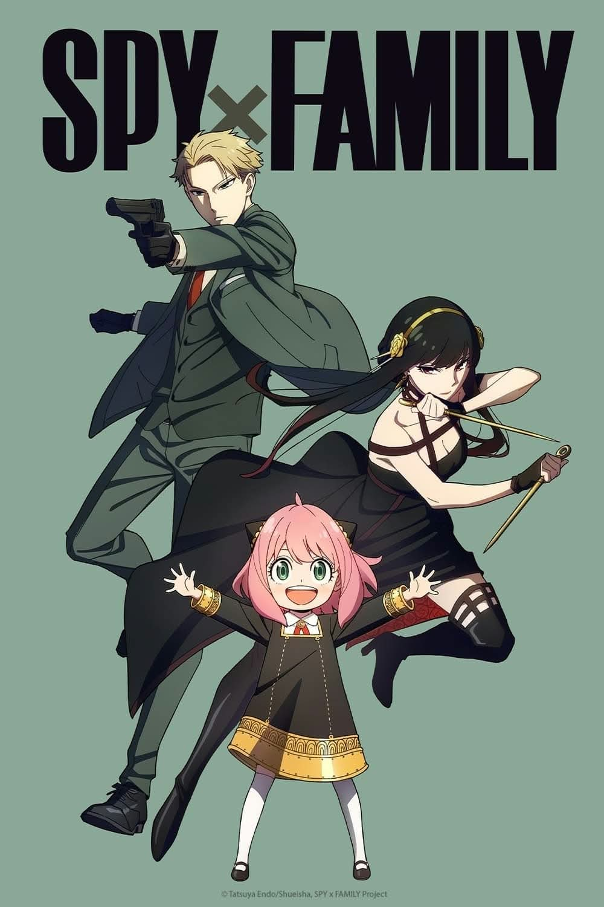
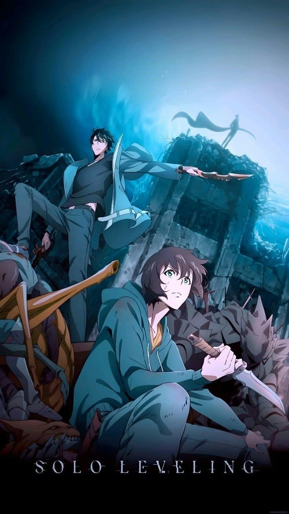

Adventure
Hunter x Hunter
A determined young seeker follows a trail of clues toward a legendary test, discovering that courage is as much about kindness as skill.
Explore a manga-inspired reading shelf filled with action, mystery, sports, supernatural adventures, and unforgettable journeys. Pick a cover and begin Chapter One.
Explore the Library ↓Twenty-six titles. Each card opens its own one-chapter original fan story.
A determined young seeker follows a trail of clues toward a legendary test, discovering that courage is as much about kindness as skill.
Years of training lead a young ninja back to a changing village, where an urgent mission tests loyalty, patience, and the meaning of home.

A student discovers a notebook that seems to predict secrets. The closer they get to the truth, the more carefully they must question their own judgment.

A quiet mountain village is threatened by a strange night-time presence, and a compassionate traveler learns that bravery also means protecting the vulnerable.

A student joins a small team investigating strange marks around the city, learning that calm thinking and teamwork can face even the most unsettling unknown.

A group of friends trains for a tournament while a mysterious signal approaches Earth, reminding them that power matters most when guided by responsibility.
A young guardian follows a trail of glowing paper lanterns through a hidden city, helping lost spirits find the memories that will guide them home.

A young sailor joins a voyage toward a peaceful land, discovering that the hardest journey may be learning to live without revenge.

A doctor notices a pattern linking several anonymous letters and begins a careful investigation into how ordinary choices can change lives.
A wandering swordsman challenges his own pride after meeting a patient farmer who shows him a different kind of strength.

A young commander must defend a border town with limited supplies, relying on observation and trust rather than the size of an army.

A strange family heirloom reveals a hidden map, sending a curious traveler on a puzzle-filled journey through a house where nothing behaves normally.

A broke young worker takes a strange night job and finds that the city’s oddest problems are easier to face with honest friends.

A student gets lost in a nighttime market where every stall hides a secret, and must learn to listen before judging those who seem frightening.

A student who doubts their own talent joins a rescue exercise and discovers that heroism begins with noticing what others need.

A rough-around-the-edges basketball player learns that a team is built through practice, humility, and showing up for one another.

A clever student receives a strange tactical interface and must decide whether winning a conflict is worth the cost of manipulating others.

A student inventor notices that a homemade device is sending messages at impossible times, leading to a careful experiment about cause and consequence.

A crew of space travelers follows a mysterious distress signal and learns that not every lost person wants to be found the same way.

A young pilot faces a simulation that responds to fear, discovering that asking for help is a form of courage rather than failure.

A quiet student with unusual abilities helps a neighborhood solve a series of harmless but baffling disturbances, learning that character matters more than power.

A group of odd-job workers accepts a simple delivery that turns into a citywide mix-up, proving that friendship can survive even the silliest chaos.

A determined volleyball player and his teammates prepare for a tough match, discovering that timing and trust can turn a small team into a strong one.

An apprentice without the expected gift discovers a forgotten spell that helps protect a village, proving persistence can open unexpected doors.

A carefully planned school event turns chaotic, and an unusual family must rely on honesty and teamwork to get through the day.

A low-ranked explorer discovers a mysterious training chamber that rewards steady progress, learning that growth is built through choices and perseverance.
No stories found. Try another title or genre.
This fan-made student project presents 26 manga titles as a web library. Each chapter is an original, unofficial story inspired by broad themes, not a reproduction of official manga chapters. Covers are original locally stored SVG designs, so they load without external image links.